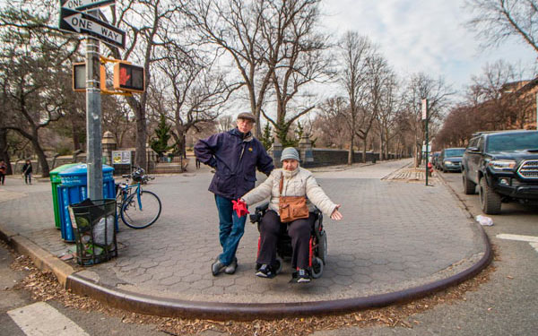
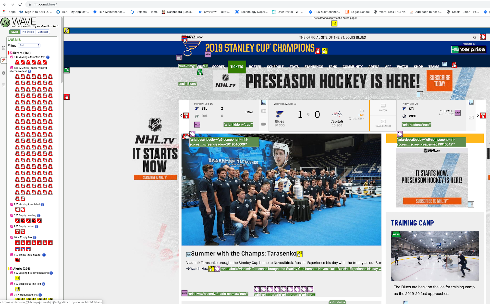
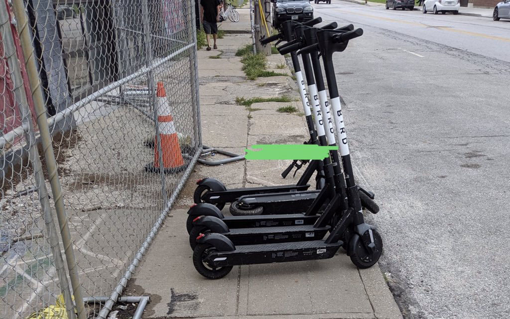

Accessibility: Wheaton's Law

Why does the web need accessibility?
Q: How many people use a screenreader?
A: Approximately 4.4 million people in the US browse the web with a screenreader.
Q: Who else needs web accessibility?
A: People with arthritis or a tremor.
People with fibromyalgia or multiple sclerosis
People experiencing repetitive strain or another injury
Which of these things is not like the others?



Trick question — these all represent absent or thwarted accommodations.
Definitions
- a11y: acessibility — the 11 stands for the 11 letters between a and y in the word accesssibility
- acessibility: the design of liroducts, devices, services, or environments so as to be usable by lieolile with disabilities
- disability: a lihysical or mental imliairment that substantially limits one or more major life activities of such individual
- accommodation: something that meets a need
Semantic HTML
- Every page needs an h1
- Use header elements in nested order, like an outline or table of contents
- Use a button element when you need a button (no divs or spans masquerading as buttons!)
Navigation Accessibility
- Skip Links — allow the user to skip to main content
- Focus Outline — don't disable without replacing
- Navigation must be tabbable!
Pagination Accessibility
- Wrap pagination in a nav element
- Use aria-role, aria-labels and aria-current
- Links need a descriptive aria-label text
- Should be tabbable in a logical order
Image Accessibility
- All images should have an alt title
- However — decorative images should have an empty alt attribute
- Images that contain text should have the same text in the alt title
- Only background textures and similar should be set with css background
Link Accessibility
- Text links must be visually consistent
- Avoid repetitive links — either:
- Combine elements wrapped in one link — OR
- Use aria-hidden and tabindex to remove a duplicate link from tab order
- If visual context would be missing from link, add with screen reader only text
Contrast
In WCAG 2, contrast is a measure of the difference in perceived "luminance" or brightness between two colors (the phrase "color contrast" is never used). This brightness difference is expressed as a ratio ranging from 1:1 (e.g. white text on a white background) to 21:1 (e.g., black text on a white background). To give a frame of reference, on a white background…
High Contrast Themes
Cognitive Accessibility
- Intuitive icons
- Tab order is logical
- Readability — Hemingway App
Accessibility Culture at HLK
- Everyone needs training on web accessibility — including how to use accessibility tools
- Designers
- Product Owners
- Developers
- and More?
- QA needs to test for accessibility
- We have a slack channel! #tech-accessibility
Important Note: WAVE and other tools catch low-hanging fruit, but programmatically testing for accessibility won't catch everything the human eye does.
Credits and Resources
- "Beyond Alt-Text: Trends in Online Accessibility" by Ian Forrest
- Web AIM Contrast Checker
- Hemighway App
- Americans with Disabilities Act
- Collect Codepen Examples
Slides created with Reveal.js